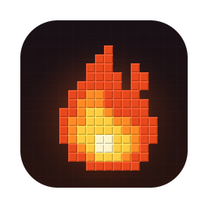

Every version
Any release or snapshot, back to the Alpha days of 2010. Ember downloads it straight from Mojang — no official launcher needed.

Ember GitHubAny release or snapshot, back to the Alpha days of 2010. Ember downloads it straight from Mojang — no official launcher needed.
On by default. Sodium, Lithium, FerriteCore and more in their own folder, plus Java tuned for smooth frames. Your worlds stay shared.
Switch on Shaders and pick Fast (MakeUp – Ultra Fast, smooth on most computers) or Fancy (Complementary Reimagined). Ember adds Iris and the pack for you.
Search Modrinth inside Ember and install mods in one click, with Fabric, Forge or NeoForge and every library they need. CurseForge is built in and switching on soon.
Pick any skin PNG for offline play and see it in-game, or bring your Ely.by skin to Ely.by servers.
Play offline with any name, sign in with a free Ely.by account, or use your Microsoft account for official servers and Realms.
Rekindle spots new versions and installs them in one click. Every update is signed, so only real Ember updates get in.
Each version gets the exact Java runtime it needs, downloaded and checked automatically.
English, Türkçe, Español, Русский, 日本語 and many more — Ember picks yours automatically.
This is the real Ember interface, running in your browser. Type a name, pick a version and press Play — downloads here are simulated.
Not sure which? Open Settings → System → About and look at “System type”.
On Windows, Ember can also start Bedrock Edition if you have it installed.
Yes. No ads, no accounts, no tracking — and the code is open on GitHub under the MIT license.
The macOS app is signed and notarized by Apple. Game files come straight from Mojang, mods from Modrinth, and every file is checked against its official checksum. Windows builds aren't code-signed yet, so Windows shows a warning the first time.
You don't have to. Ember 0.6.2 and newer check for updates when they open and ask before installing. Older versions need one last download from this page.
Click your player's face next to the name in Ember. Offline: pick one from your skin library, add a PNG, or import any Minecraft or Ely.by player's skin by name — you'll see it in-game, other players won't. Ely.by: change it on ely.by and Ember picks it up.
Yes. Click Mods next to Version to search and install with one click. Each loader and game version gets its own mods folder, so mods never clash — Open mods folder shows it.
No. FPS Boost runs from its own folder (ember/instances) and links to your real worlds, resource packs, shader packs and screenshots. Your own mods folder is never changed.
Yes: sign in with your Microsoft account for official online servers and Realms, or use a free Ely.by account to join any server that supports Ely.by.
Try turning FPS Boost or Shaders off, or lowering the memory slider. If it still won't start, open an issue on GitHub and attach logs/mc-launcher-output.log from your Minecraft folder.
Something not working the way it should? Let us know and we'll help you out.